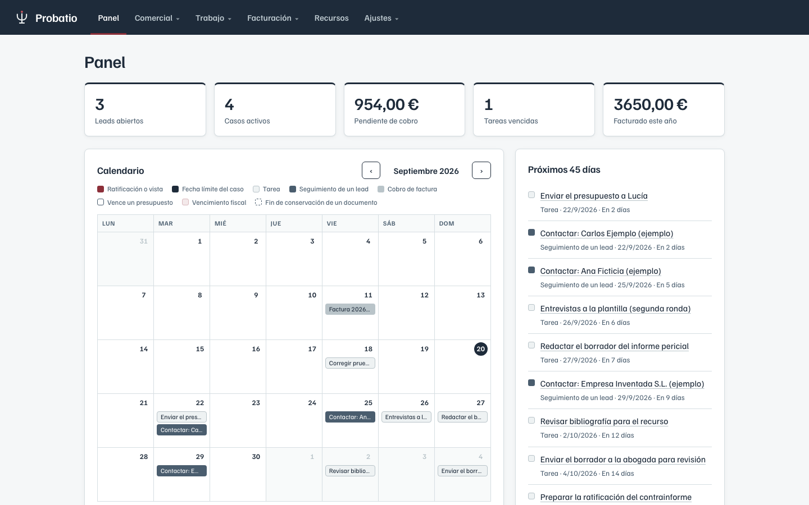
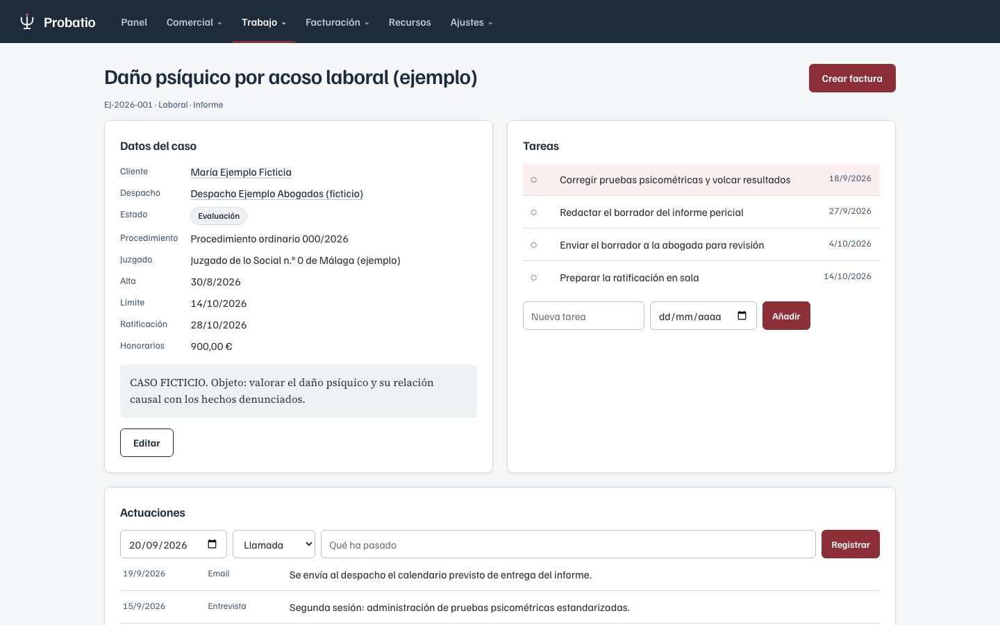
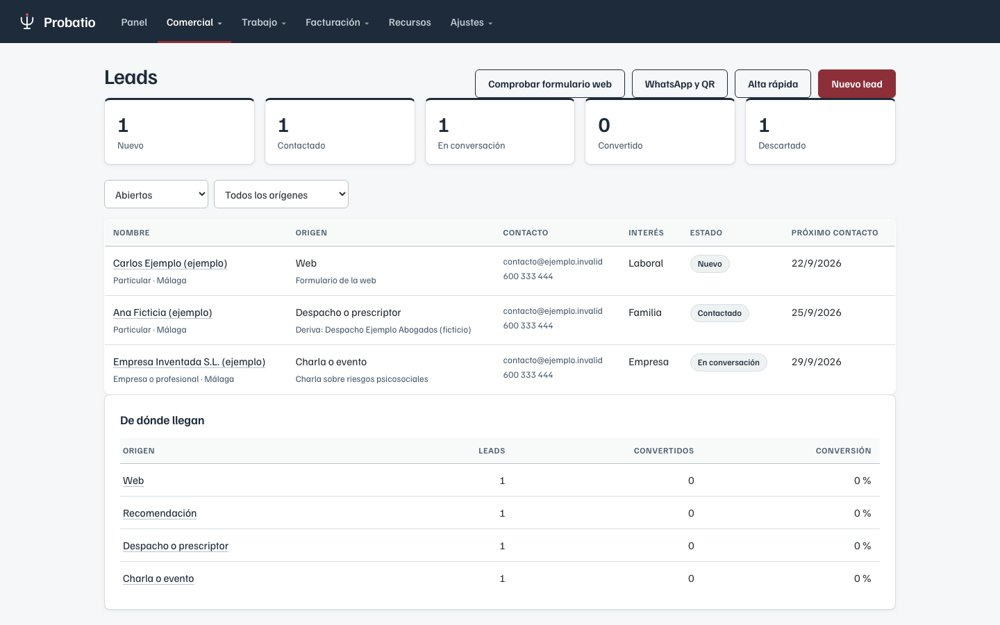
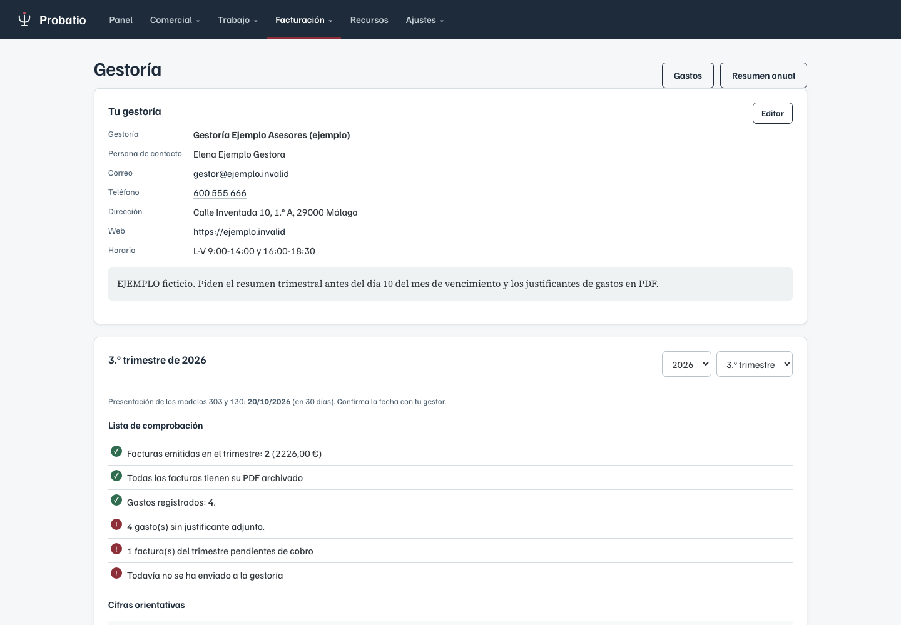
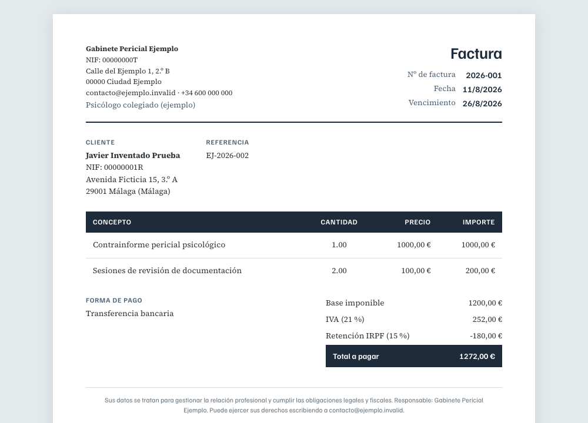
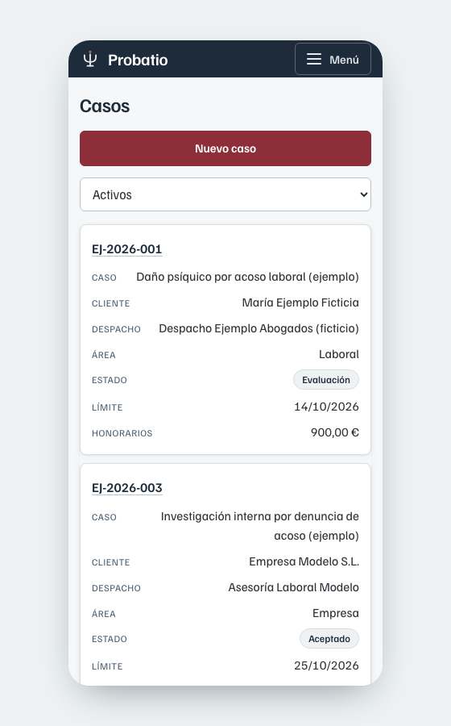

Probatio
La herramienta de gestión para peritos psicólogos. Expedientes, plazos, documentación cifrada y facturación, instalada en tu propio equipo. Desarrollada por un perito que también programa.
Hecha para periciales psicológicas, no para siniestros
El software que existe para peritos está pensado para valorar daños materiales de seguros. Nada de eso sirve cuando tu expediente contiene consentimientos informados, protocolos de test y datos de salud.
Expedientes y plazos
Cada encargo con su cliente, su despacho, su procedimiento y su fecha límite. Los vencimientos se avisan solos.
Documentación protegida
Archivos cifrados, registro de cada descarga y plazo de conservación por documento, como exige el RGPD para datos de salud.
Facturación y red
Facturas con numeración correlativa, IVA y retención desde el propio expediente, y seguimiento de los despachos que te derivan casos.
Así se ve
Capturas reales de la aplicación con datos ficticios. Puedes recorrerla tú mismo en la demostración.





También en el móvil
El menú se agrupa y los listados se convierten en tarjetas, para consultar un plazo o un dato desde el teléfono sin ampliar la pantalla.

Cómo se contrata
Cuatro servicios que se contratan por separado o combinados. La herramienta se instala en tu propio equipo o en una nube privada tuya: los datos no pasan por servidores de terceros.
Desarrollo a medida
Módulos y adaptaciones para cómo trabaja tu gabinete: campos propios, plantillas de informe, cálculos o integraciones concretas.
ConsultarInstalación e implementación
En tu propio equipo o servidor, o en una nube privada tuya. Incluye la configuración con tus datos y la migración de los expedientes y facturas que ya tengas.
ConsultarMantenimiento
Actualizaciones, copias de seguridad verificadas, revisiones de seguridad y soporte por correo.
ConsultarFormación en el uso
Sesiones para ti o para todo el gabinete, incluida la parte de protección de datos aplicada al día a día.
Consultar
Cada proyecto se presupuesta según su alcance. Más adelante habrá packs cerrados y licencias mensuales para los casos más habituales.
Tus datos se quedan en tu consulta
Un expediente pericial contiene datos de salud. Por eso no existe una nube compartida donde subir tus casos: tú eliges dónde vive la información.
- Instalación local: en tu equipo o en un servidor de tu consulta, accesible solo desde tu red. Es la opción más protegida.
- Nube privada: un servidor contratado a tu nombre, si necesitas acceder desde varios sitios. Te explico con claridad qué riesgos añade y qué medidas lo compensan.
- Los documentos se guardan cifrados, con clave que controlas tú.
- Registro de accesos: quién entró, cuándo y qué descargó.
- Copias de seguridad cifradas y guion de restauración probado.
- Al implantarla te entrego la documentación técnica que necesitas para tu registro de actividades del tratamiento.
Probatio está en desarrollo continuo y crece con las necesidades reales de los gabinetes que la usan. La versión actual y los cambios publicados se detallan en la demostración guiada.
Pruébala con tus propios casos
Te enseño la herramienta en una videollamada de 30 minutos, con tus flujos de trabajo sobre la mesa. Sin compromiso.